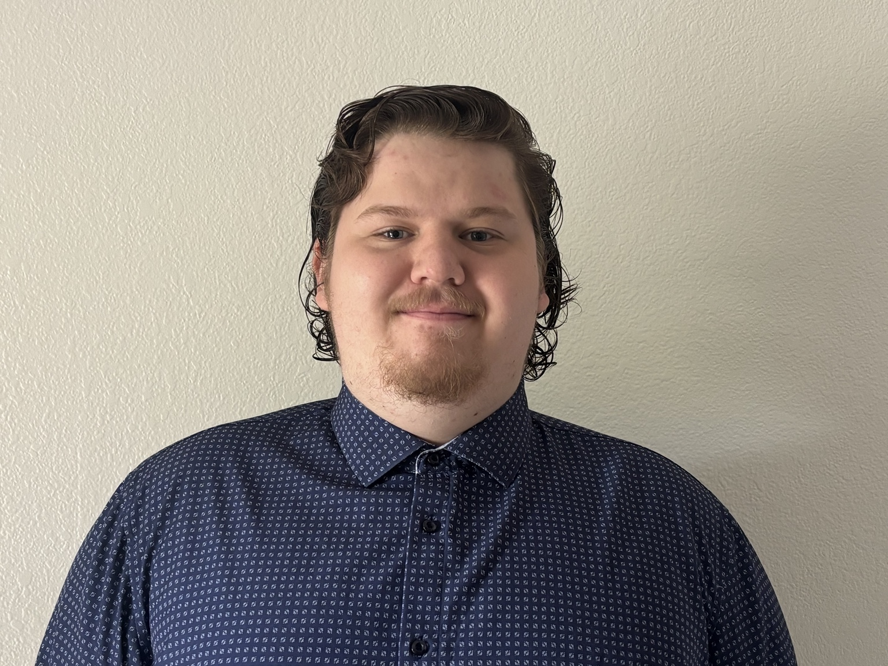
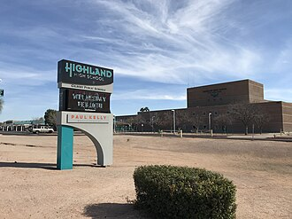

CURRENT ROLEStarted approximately May 2026
Debt Collector
Zwicker & Associates, P.C.
Communicating with customers over the phone in a role that calls for clear communication, attention to established guidelines, and a focus on goals.
ZACHARY VANN / PERSONAL PORTFOLIO
I'm Zachary Vann—a people-focused problem solver with hands-on customer service experience and a growing passion for technology. This is my space to share where I've been and where I want to go.
Explore my experience ↗ Meet the human ↓
++✦01 / THE HUMAN BEHIND THE SCREEN
I'm 20 years old, a high school graduate, and someone who enjoys technology, helping people, and learning by doing.
Across food service, merchandising, and debt collection, I've developed strong communication skills and experience helping customers in person and over the phone. I work well with clear guidelines and goals, and I want to keep building my knowledge toward a career in tech.
02 / REAL-WORLD EXPERIENCE
Working with people.
Learning with every role.
Zwicker & Associates, P.C.
Communicating with customers over the phone in a role that calls for clear communication, attention to established guidelines, and a focus on goals.
Route merchandising
Traveling to three locations to keep bread stocked, rotate products, and maintain neat, well-organized displays.
Freddy’s Frozen Custard
Built practical customer service experience while helping people and communicating with customers and coworkers in a food service setting.
03 / PERSONAL PROJECTS
FEATURED BUILD
A space-inspired portfolio built with HTML, CSS, and JavaScript. An evolving home for projects, learning, and whatever comes next.
Explore this portfolio ↗04 / EDUCATION & LEARNING
Two years of technical education.
A foundation to keep building on.
TECHNICAL EDUCATION / TWO YEARS
Attended E.V.I.T. for two years alongside high school, studying coding, databases, and programming languages. This hands-on technical education helped shape my interest in a career in technology.

HIGH SCHOOL / GRADUATE
Graduated from Highland High School while also pursuing technical education at E.V.I.T., combining general studies with practical learning in technology.
05 / OFF THE CLOCK
When I'm not working, I enjoy gaming—especially Halo, one of my favorite games.
I also like creating personal projects and exploring technology at my own pace. For me, learning doesn't stop when the workday ends.
06 / KEEP EXPLORING
My GitHub is where I share collections of personal projects and experiments.
LET’S CONNECT480 721 8754 ↗Browse my GitHub ↗Secret mission: click the robot in section 03 before he disappears, then enter 117. Refresh the page to see him again.